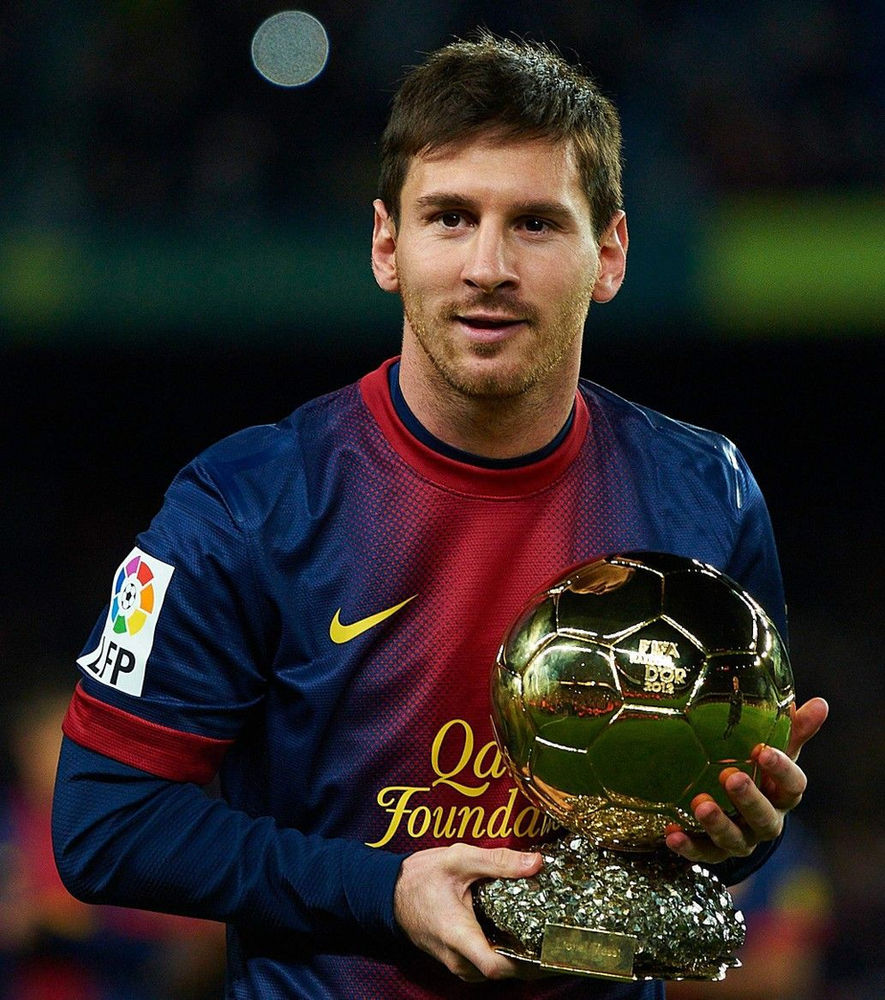

Golden Boot Award
Lionel Messi is the greatest football player of all time.He has won countless awards in the world's mostb popular game. He also won the world cup recently with argentina.He has scored more than 1000 goals and has more than 400 assists.He scored most of the goals with barcelona where he stayed over 10 years and won 34 trophies with his club.Later he moved to psg where he scored 32 goals and has 34 assists in 75 games.
 Lionel Messi has seven ballon d'ors which is a individual award given evry year for the best player. Messi has the most goladen balls than any other player. His rival has only 5 having played more games than him.Despite his success messi is very humble on and off the pitch and very calm during the game.Messi also has won 6 golden boots which is given to a player who has scored most goals in a year.
Messi had a poor run with his country argentina , many people burned his photos in public and called him a fraud. He has not won a single trophy until 2021. Later he went on to win the world cup, copa america and Finalissima which are the three major trophies. He silenced everyone who questioned his form with argentina. He also ended the GOAT DEBATE with this.He is now most loved in his country.
Barcelona
PSG
Golden Boot Award